セキサイのホームエリア｡迫間峠､富之保､上之保､美濃の町までのお店です｡
大正ロマンの建物で､サイクリストを朝から迎えてくれるカフェ
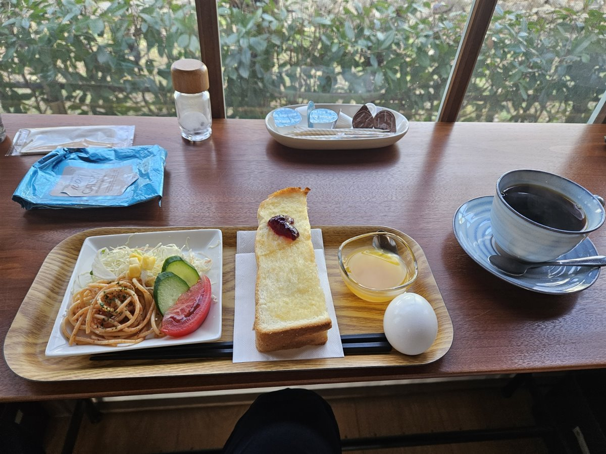
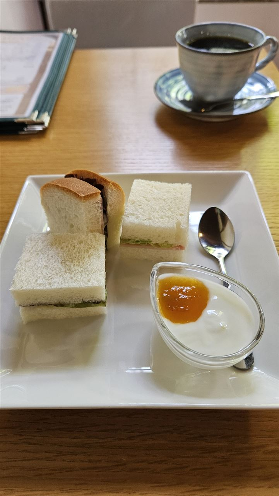
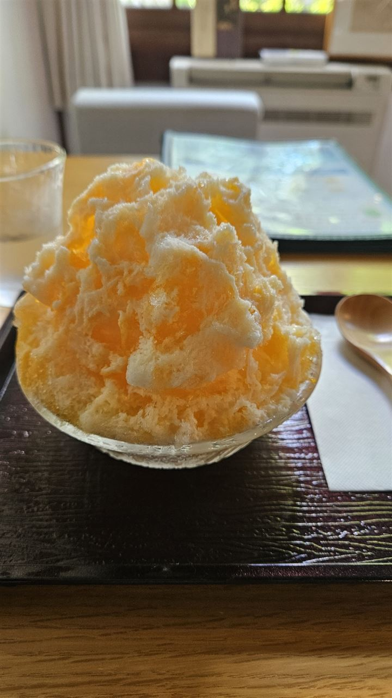
朝8時30分から営業しているので､朝練やモーニングライドにぴったりです｡コーヒーを頼むとモーニングがついてくるお値打ちなセットや､午後のアフタヌーンティー､夏のふわふわかき氷が人気です｡
建物は大正村のような風情があり､店員さんがとにかくやさしいお店です｡いつもお客さんでにぎわう人気店です｡セキサイでは､冬のカフェライドの目的地にもなっています｡
迫間にできた､皮ごと食べる丸ごとBANANAのスムージースタンド
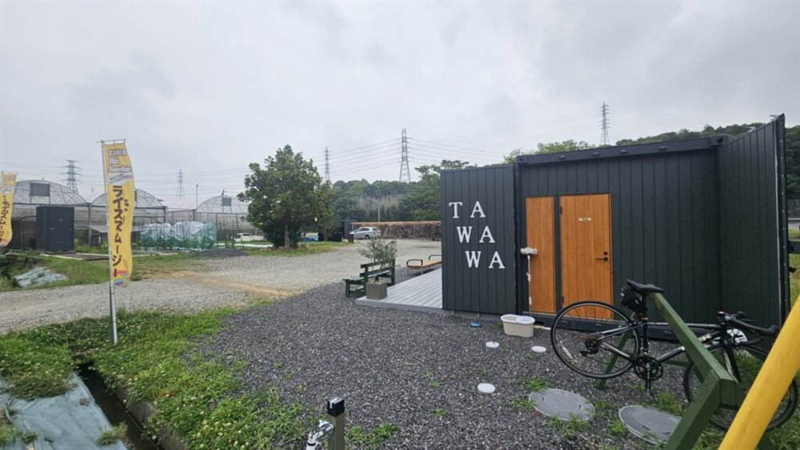
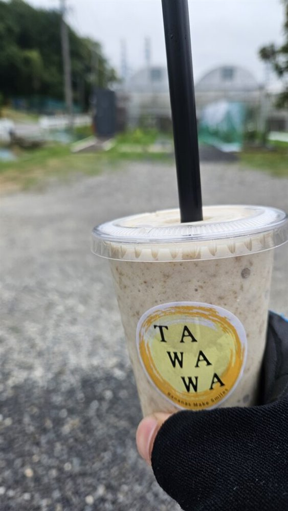
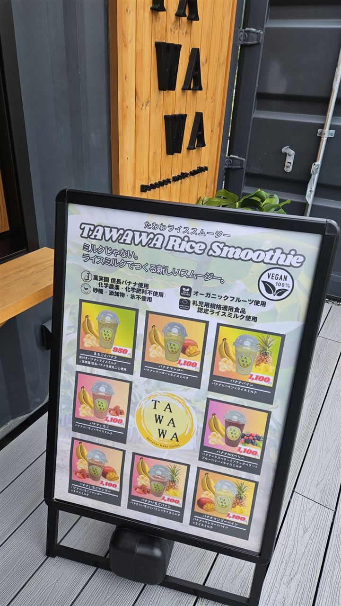
関市迫間にできた､ヴィーガンスムージーのスタンドです｡大きな農園の中にあり､サイクルスタンドも用意されています｡
看板メニューは｢丸ごとBANANA｣｡皮ごと食べられるバナナで食物繊維が豊富､皮のつぶつぶと氷のシャリシャリがとてもおいしいです｡クラフトビールも出しているので､迫間峠を越えるライドの朝や帰りにおすすめです｡
見坂峠を下った先にある､おしゃれなベーカリーカフェ
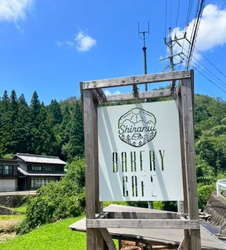
見坂峠を越えて､下之保の集落に入ったところにあるおしゃれなカフェです｡看板には｢BAKERY CAFE｣とあり､パンを買うこともできます｡
中濃山岳サイクリングのコースの途中にあるので､休憩にぴったりです｡
森の中の雰囲気がすばらしい､バイクにも人気のカフェ
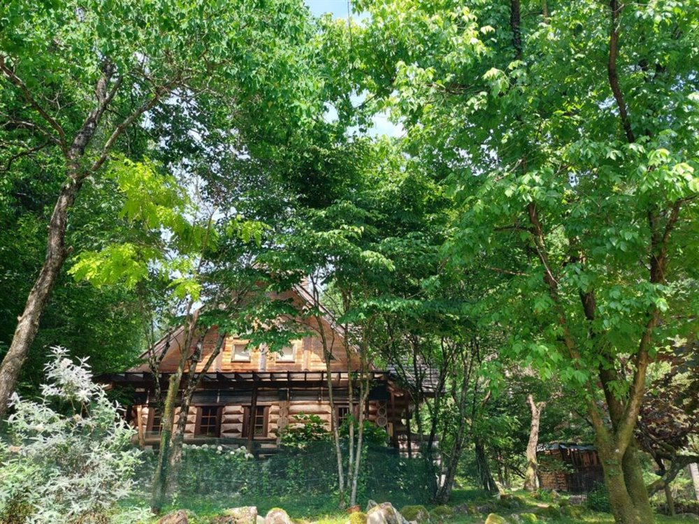
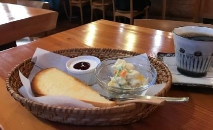
富之保地区にある､森のカフェです｡緑に囲まれたログハウスのような建物で､とても素晴らしい雰囲気です｡
名古屋方面のように､お得なモーニングがあります｡オートバイで来る人にも大人気で､サイクリングでも立ち寄れます｡
手づくりのお菓子とかき氷｡黄色いジムニーが目印の小さなカフェ
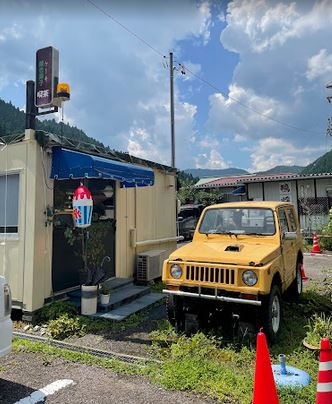
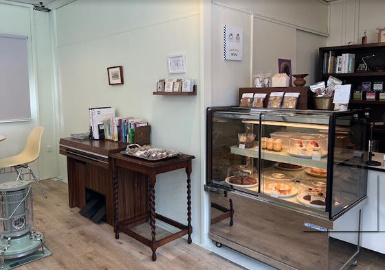
関市板取の山あいにある､小さなカフェです｡店先のかき氷の看板と､黄色いジムニーが目印です｡
店内のショーケースには､手づくりの焼き菓子やケーキがならびます｡本棚のある落ち着いた空間で､ライドの途中にほっとひと息つけます｡
伊自良湖､恋人の聖地のカフェ｡ピンクのメニューと元祖ハヤシライス

山県市の伊自良湖にあるカフェです｡伊自良湖は､恋人の聖地に認定されている､景色のよい人工湖です｡
名物は､ピンク色の坦々麺と､元祖ハヤシライスです｡聖地にちなんだ､見た目もかわいいメニューがそろいます｡
湖をぐるりと囲む桜並木や､ハート型のベンチで記念撮影もできます｡関から行きやすい､家族やサイクリング仲間とのお出かけにぴったりの場所です｡
迫間峠の頂上で食べる､関市民おなじみのチャーシューメン
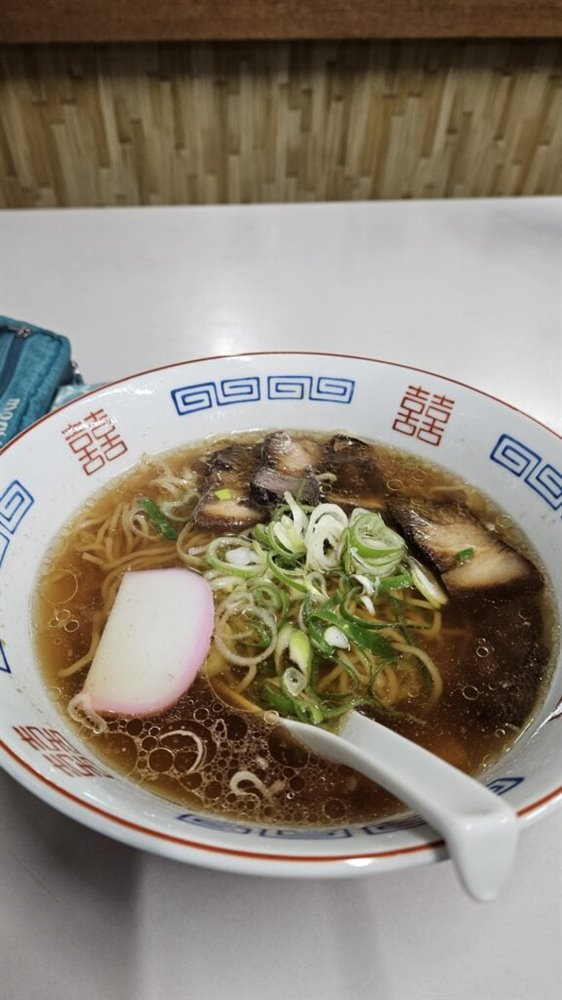
関市迫間の頂上にあるお店です｡迫間不動ヒルクライムコースの目的地で､関のメンバーがいつも食べている､絶品のチャーシューメンが名物です｡
チャーシューがたっぷりで､食べごたえも最高です｡朝のライドのあとに食べるのが､習慣になっています｡
けいちゃん･うなぎ･カツ丼､トマト工業メンバー御用達の食堂
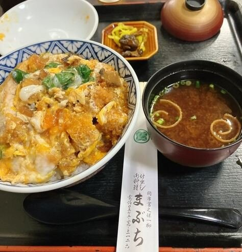
富之保地区にある､トマト工業のメンバー御用達のお店です｡けいちゃん､うなぎ､カツ丼がおいしく､カツ丼は大盛を頼めば大食いの人でも必ず満足できます｡
ケイちゃんは併設のショップでタレだけでも買えるので､遠く名古屋から通う人もいます｡セキイチのおすすめグルメでもあります｡
外はカリッカリ､中はふっくらの炭火うなぎ
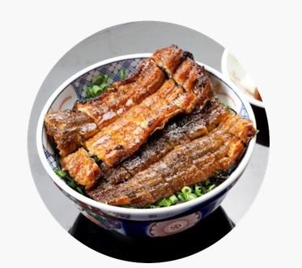
関市上之保の城山の麓にあるうなぎのお店です｡関市のうなぎは炭火で焦がして焼くので､外はカリッカリ､中はふっくらに仕上がります｡
｢ここで食べたら地元でうなぎが食べられなくなった｣という声もあるほどです｡ほほえみの湯で温泉に入ったあとに食べるのが､上之保のおすすめのモデルコースです｡
美濃で食べる､食べごたえのあるモナカアイス
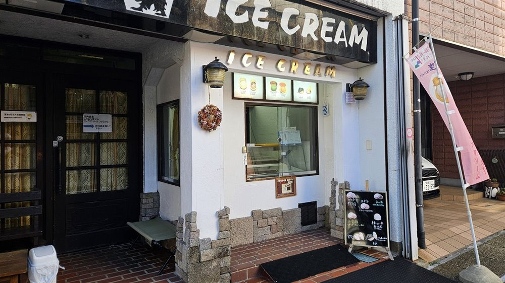
美濃の町にある､アイスの名店です｡名物のモナカアイスはテイクアウトでき､しっかりした歯ごたえで､食べごたえがあって本当においしいです｡
石徹白や郡上方面からの帰り道に美濃へ戻ってきたとき､ほっとひと息つくのにぴったりです｡
上之保の名産品､ゆずの商品づくりの会社
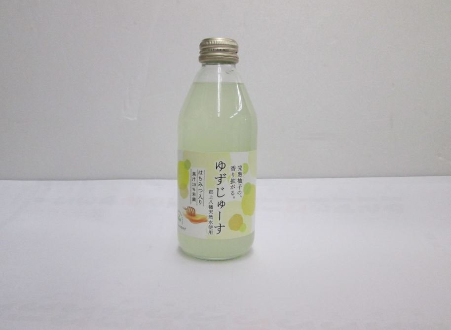
上之保の名産品はゆずです｡ゆずはビタミンCがレモンの約3倍で､風邪予防や疲労回復にも役立ちます｡2021年にはゆずジュースの新作が発売され､トマト工業からも取引先さんへの感謝の気持ちとして配布しました｡
ライドの帰りに道の駅平成で足湯につかりながら､ゆずのお土産を買うのがおすすめです｡
冠山チャレンジの最初の補給は､片道15km地点のこのお店で
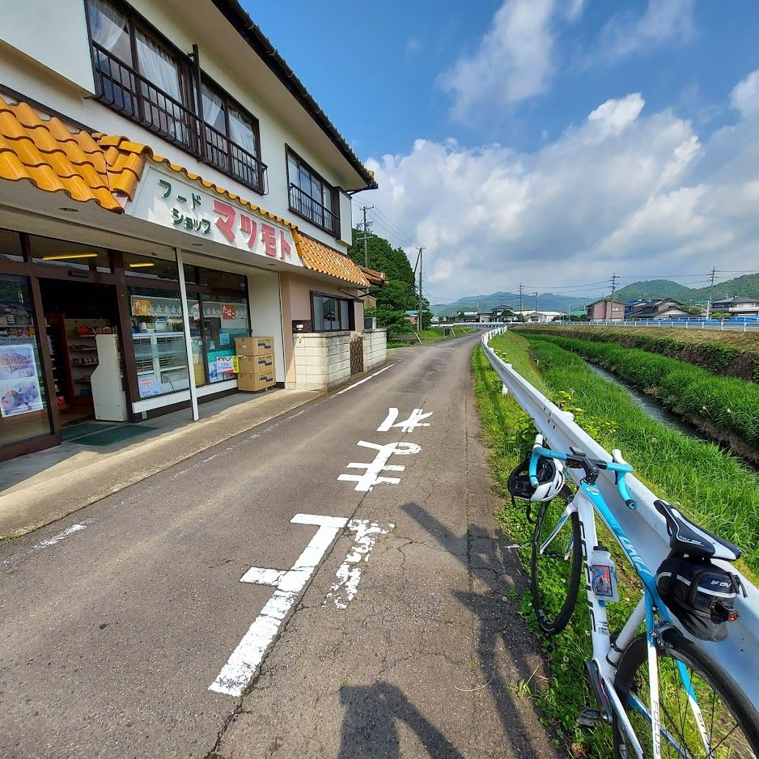
武儀川沿いにある商店です｡冠山へのサイクリングで､家から片道15kmの最初の休憩場所になりました｡細ポッキー､アンパン､ジュースを購入｡
寝坊して出発が遅くなったおかげで､補給店が開いている時間に着けました｡｢どこいくの?｣と聞かれて｢冠山行きます｣と答えると､｢すごいとこやで､頑張ってね!｣と励ましてもらいました｡
洞戸の名産キウイのシャーベットでひと休み
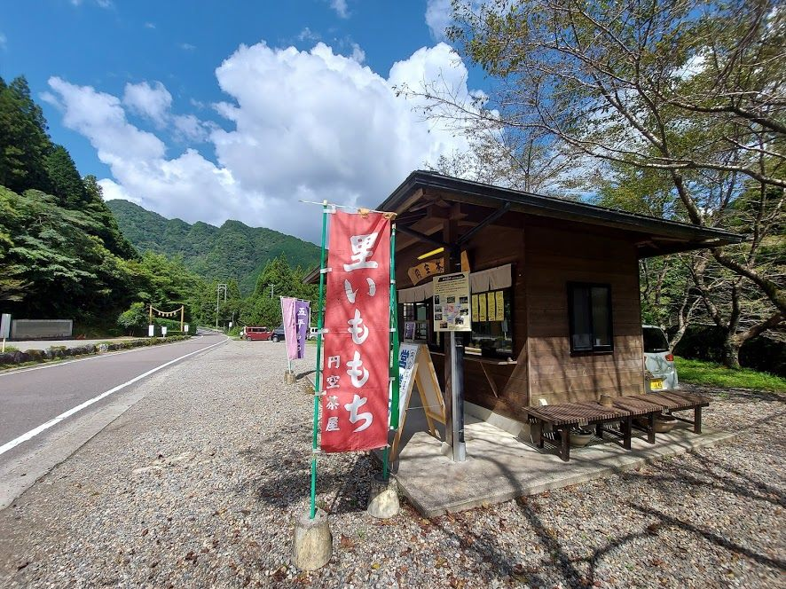
板取温泉へ向かう､板取川沿いのライドで寄り道したお店です｡洞戸はキウイフルーツの特産地で､ここではキウイのシャーベットをいただきました｡
モネの池の先､板取温泉までは13kmほど｡ダイヤモンドのように美しい板取川を眺めながら走る､夏におすすめのコースです｡
板取川ぞいの日帰り温泉｡走ったあとの汗を流せる
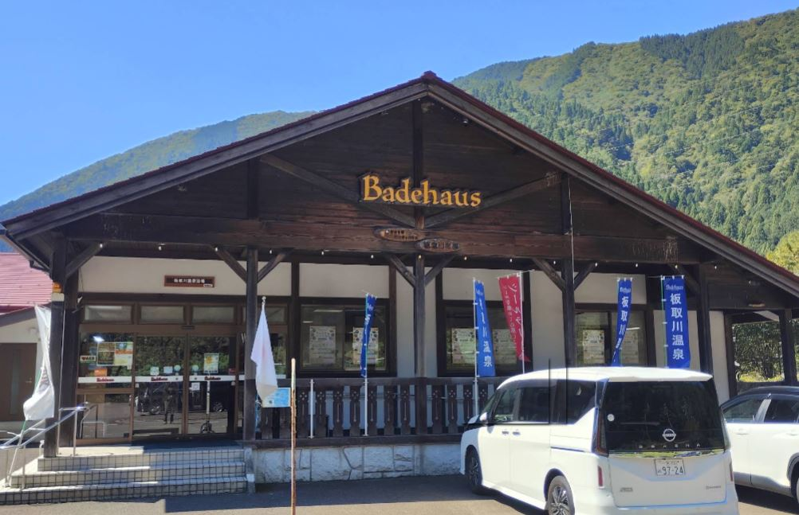
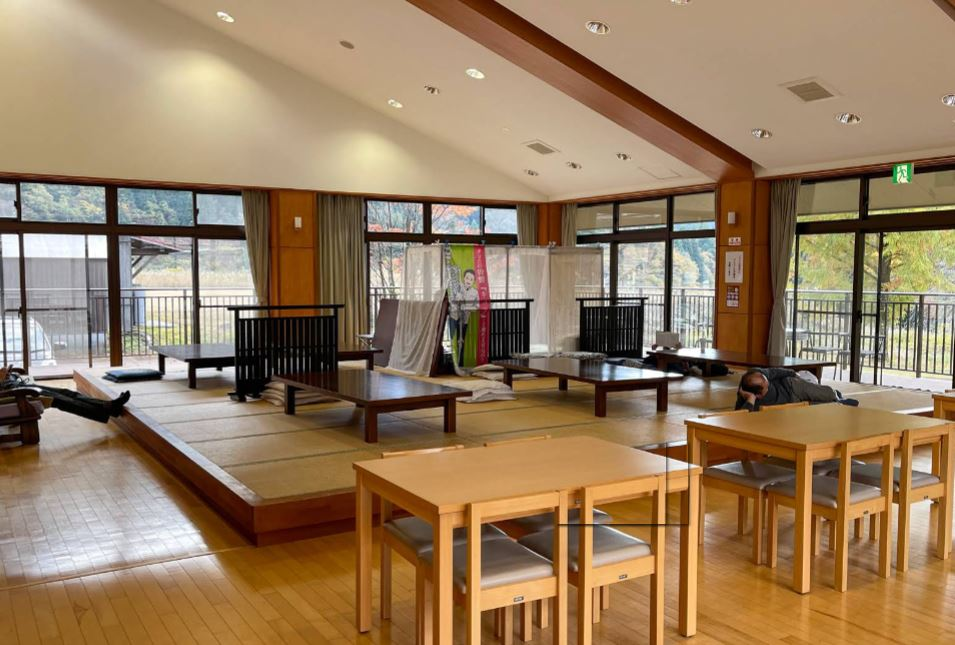
関市板取の､板取川ぞいにある日帰り温泉施設です｡三角屋根の木造の建物が､山の緑によく似合います｡
ひろい休憩スペースには､畳のスペースもあります｡走ったあとにゆっくり休めます｡
せきサイクルツーリング in 板取川(2017年)では､ここでいももちを購入しました｡里いもの割合が高い､ねっとりしたおいしさです｡お店の人に｢ドライブスルーやね｣と笑われたのも､よい思い出です｡
懐かしのゲームと自販機ハンバーガー｡昭和にタイムスリップ
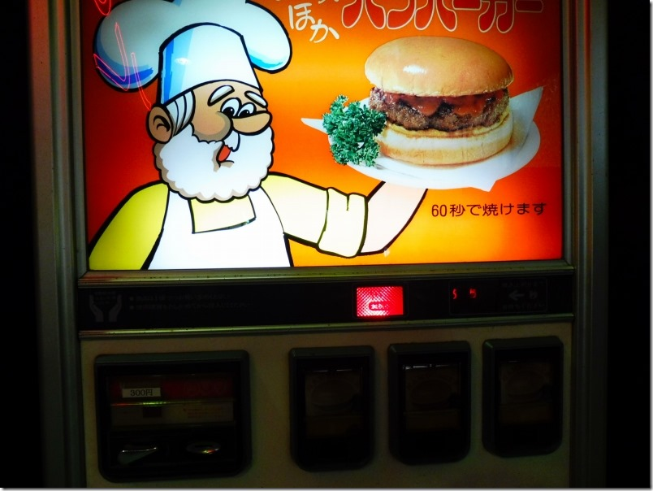
岐阜市にある､昭和レトロの遊び場です｡関から片道約20kmなので､ロードバイクでも行けます｡
館内には懐かしのゲーム機が並び､自由に遊べます｡昭和のパチンコ屋さんも再現されていて､大人がはしゃいでしまう空間です｡
名物は､自販機のハンバーガーです｡60秒で焼きあがる､ホクホクのバーガーを､ストリートファイター2の台の上で食べるのが､セキサイ流です(2016年の訪問時は､入場料が1時間500円でした)｡
うだつの町並みの入口｡郡上八幡ライドのスタート＆ゴールの定番
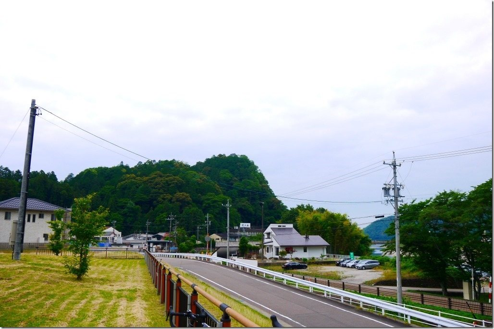
美濃市の道の駅 美濃にわか茶屋は､セキサイの｢鉄板コース｣である郡上八幡ライドの出発点であり､第1エイドポイントです｡
うだつの町並みを抜けてたどりつく､ほっとひと息つける場所｡ここからは美濃小倉山城跡も望めます｡春の郡上八幡花見ツーリングでは､ここに集合して､ここで解散するのが恒例です｡
小高い丘の上のごほうびスポット｡ソフトクリームは､ブログ筆者いちおし
関市洞戸の小高い坂の上にある道の駅です｡坂をのぼったごほうびは､ここのソフトクリーム｡岐阜県のソフトクリーム通を自称するブログ筆者が､｢ここのソフトクリームが一番美味しい｣と太鼓判を押しています(2016年)｡
ミックスソフトクリームとカフェオレでひと休みしながら､仲間の到着を待つこともできる､走る仲間の集合場所です｡出店のおじさんの焼きそばやフランクも､走ったあとの楽しみ｡
洞戸ライドの帰り道に｡追い風に背中を押されてたどりつく
洞戸方面を走った帰り道､風に背中を押されて一気に到着した､関市の道の駅むげ川｡長いライドのしめくくりに立ち寄って､ひと息つくのにぴったりです｡
いちごソフトとパンが人気｡上之保･和良方面へ向かう､セキサイの定番エイド
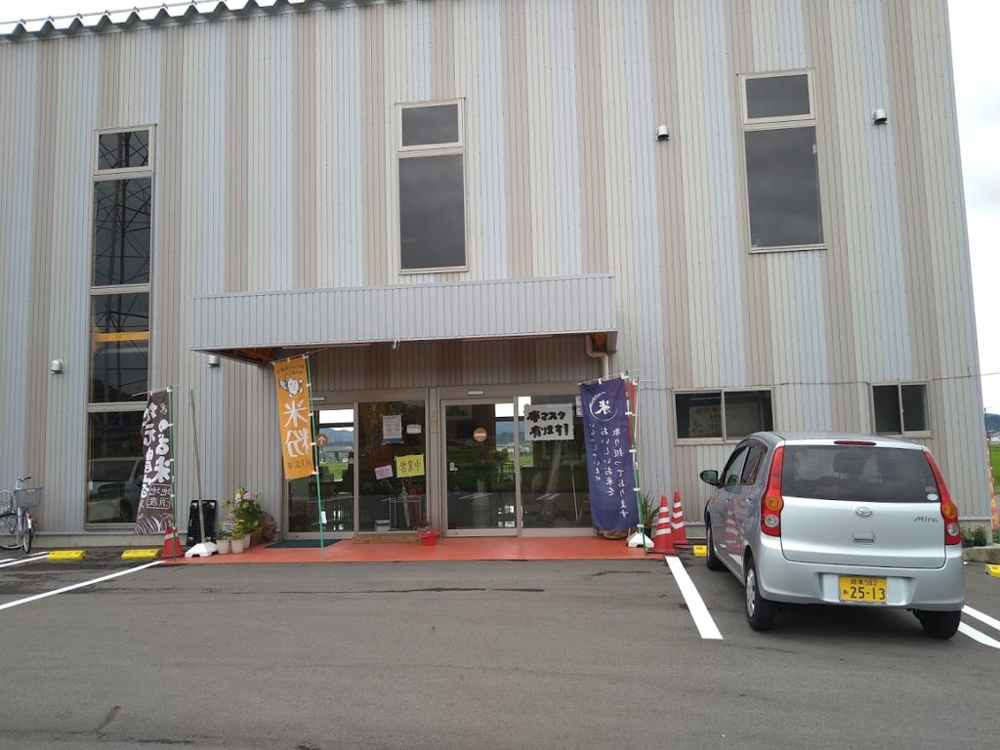
関市下之保の津保川ぞいにある､大人気の道の駅です｡外の売店のいちごソフトクリームは､特大サイズでボリューミーなのに､さっぱりクリーミー｡パン屋さんのパンもおすすめです｡
上之保や和良､郡上方面へ向かうときのエイドポイントとして､セキサイのライドでもよく立ち寄ります｡サイクルラックが用意されているので､自転車を掛けて安心して休憩できます(2021年時点)｡
2026年3月の上之保めぐりでは､足湯につかりながらゆずのおみやげを買う､ごほうびのコースにもなりました｡
関市百年公園南口にある､やさしい店主さんの自転車屋
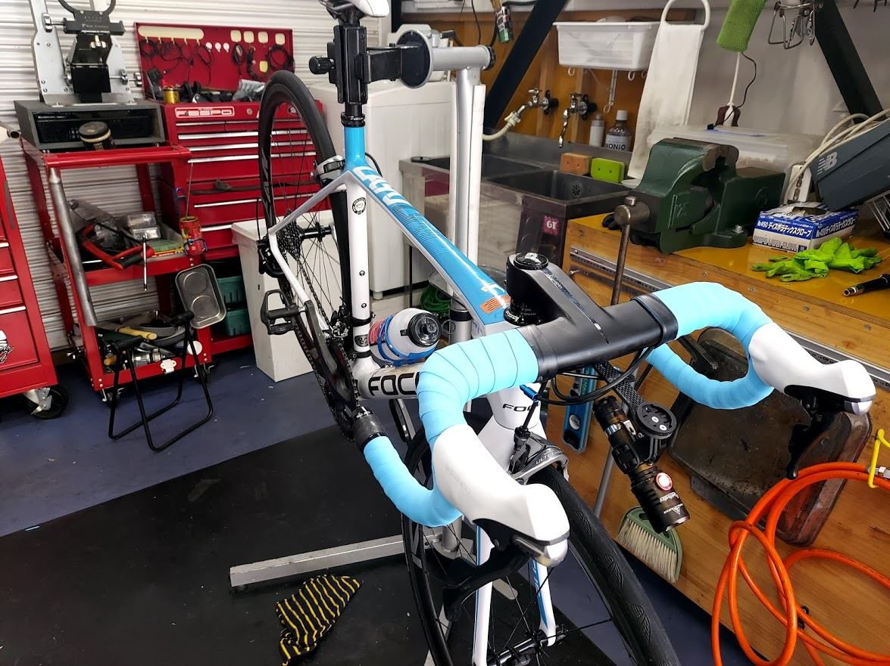
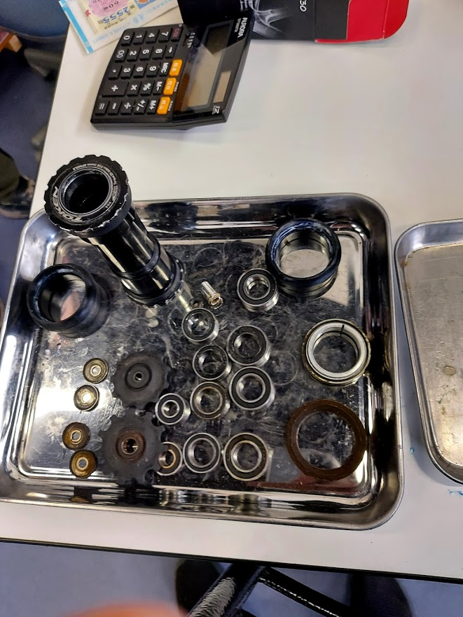
関市の百年公園南口にあるスポーツバイクのお店です｡セキサイのメンバーも､いつもお世話になっている行きつけのお店です｡
いちばんの特長は､やさしい店主さんです｡ネットで買ったパーツなど､持ち込みのパーツでも取り付けてくれます｡初心者でも相談しやすく､ロードバイクのレンタルもあるので､自転車選びに迷っているときにも心強い味方です｡
年に一度のオーバーホールや､ライド前日の急なトラブルにも対応してもらっています｡
信頼できる相談相手｡レーシングチーム｢O-RACING｣の母体になっているスポーツバイクのお店
各務原にあるスポーツバイクのお店です｡ブログ筆者が､毎年のオーバーホール(車検)を任せている､とても信頼できるお店のひとつです｡
ガチ派のロードバイクからシティサイクルまで幅広く取りそろえていて､愛車やヘルメットを購入したメンバーもいます｡変速機(ディレイラー)の調整のコツを教えていただいたり､お店のチームの練習会｢オギ練｣に参加したりと､走る仲間が自然に集まってくるお店です｡
※紹介は､トマト工業ブログ(2016年〜2026年)の記事をもとにしています｡営業時間や定休日は変わることがあるので､お出かけの前にご確認ください｡